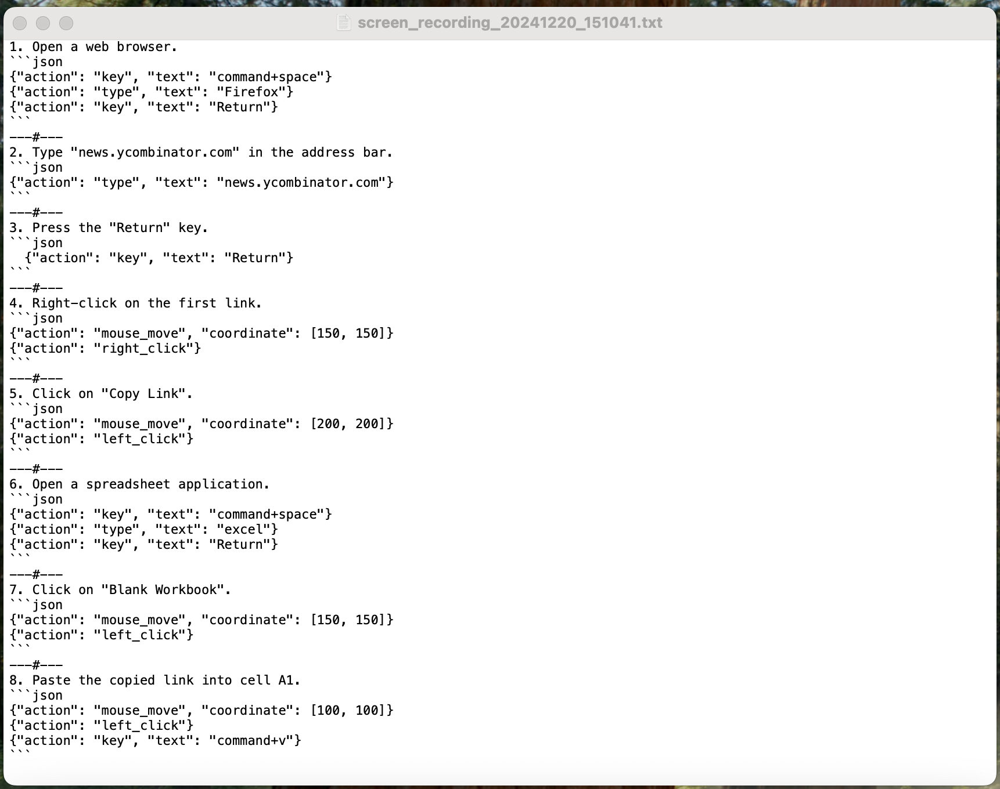
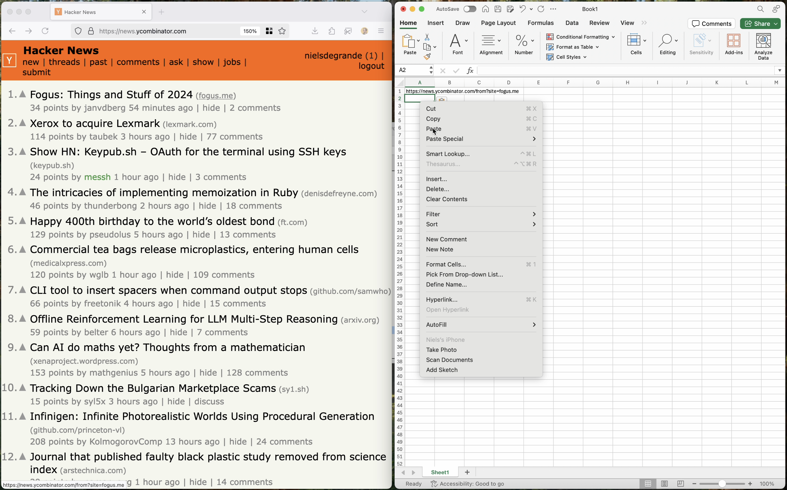

Many tasks are repetitive yet tricky to automate, often requiring human input or the ability to handle fuzzy logic and complex interfaces. Traditionally, we rely on scripts or RPA tools like UiPath, both require time and specialized skills.
Generative process automation aims to handle these more nuanced tasks by combining multimodal foundation models with direct computer access. However, prompting these systems requires precise instructions. One solution is to record your workflow once—or a few times—and feed that recording into the generative model as a guide.
Cycle is a simple implementation of this idea. It uses Gemini 2 Flash to transcribe the recorded workflow, then hands the transcription off to Anthropic's Computer Use to automate the process.
Performance is currently limited, as the system is relatively slow and computer use can be costly. As foundation model providers improve their Computer Use capabilities, performance will improve.
Ultimately, the goal is to make complex task automation accessible to everyone, no matter how intricate the job.